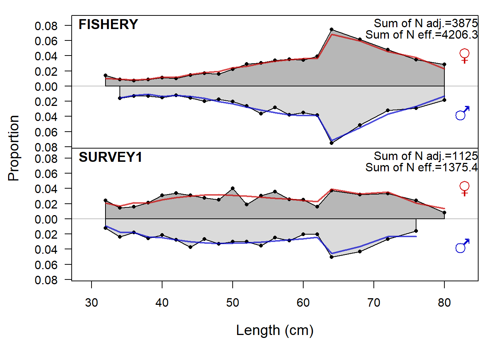
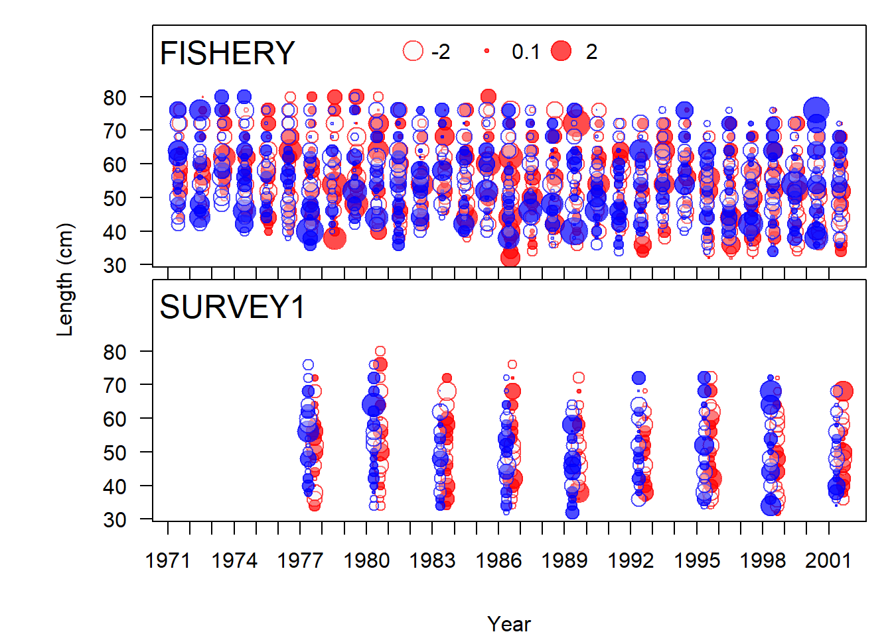
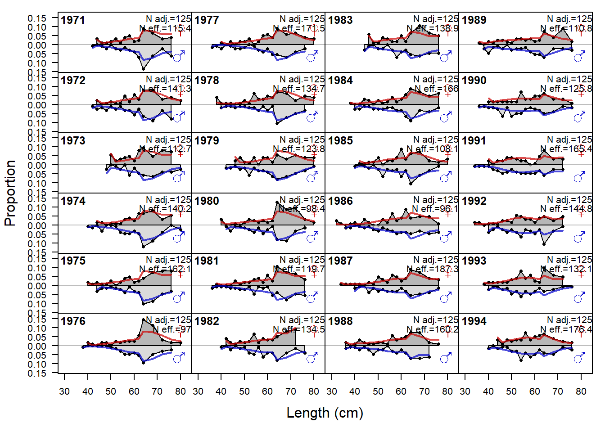
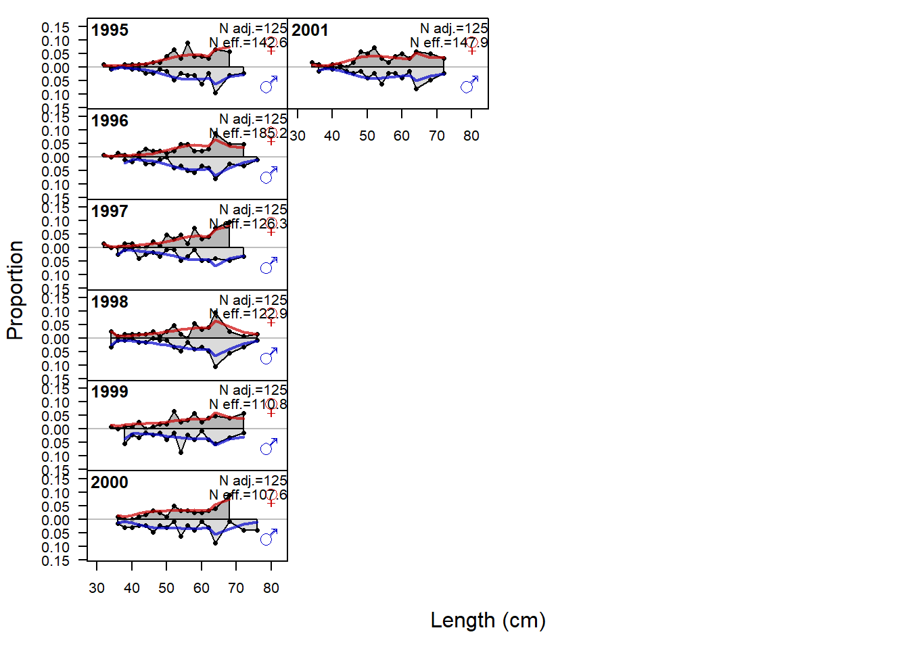

Visualización de resultados
La visualización es útil a medida que desarrolla iterativamente su modelo y para la presentación de los resultados finales del modelo. La salida de un modelo SS3 se puede leer en r4ss.
Las dos funciones más importantes son SS_output y
SS_plots, la primera para leer la salida de un modelo de
Stock Synthesis y la segunda para hacer un gran conjunto de gráficos que
ilustran esa salida.
replist <- SS_output(dir=mod_path,verbose=TRUE,printstats=TRUE)## TempFile Size
## "size of file gradfil1.tmp = 0" "size of file gradfil2.tmp = 0"
## <NA> <NA>
## "size of file varssave.tmp = 0" "size of file cmpdiff.tmp = 0"
## $SS_version
## [1] "3.30.19.00-prerel;_safe;_compile_date:_Feb 25 2022;_Stock_Synthesis_by_Richard_Methot_(NOAA)_using_ADMB_12.3"
##
## $SS_versionshort
## [1] "3.30"
##
## $SS_versionNumeric
## [1] 3.3
##
## $StartTime
## [1] "StartTime: Thu Nov 03 15:39:21 2022"
##
## $RunTime
## [1] "0 hours, 0 minutes, 47 seconds."
##
## $Files_used
## [1] "Data_File: data.ss Control_File: control.ss"
##
## $Nwarnings
## [1] 2
##
## $warnings
## [1] "1 NOTE: Max data length bin: 90 < max pop len bins: 94; so will accumulate larger pop len bins"
## [2] "2 NOTE: This model has just one settlement event. Changing to recr_dist_method 4 and removing the recruitment distribution parameters at the end of the MG parms section (below growth parameters) will produce identical results and simplify the model."
## [3] "N warnings: 2"
##
## $likelihoods_used
## values lambdas
## TOTAL 1306.5199999999999818 NA
## Catch 0.0000000000358566 NA
## Equil_catch 0.0000000000000000 NA
## Survey -3.9836000000000000 NA
## Length_comp 651.0080000000000382 NA
## Age_comp 586.6100000000000136 NA
## Size_at_age 79.2249999999999943 NA
## Recruitment -7.3970200000000004 1
## InitEQ_Regime 0.0000000000000000 1
## Forecast_Recruitment 0.0000000000000000 1
## Parm_priors 1.0560200000000000 1
## Parm_softbounds 0.0012046000000000 NA
## Parm_devs 0.0000000000000000 1
## Crash_Pen 0.0000000000000000 1
##
## $likelihoods_laplace
## values lambdas
## NoBias_corr_Recruitment(info_only) -7.39702 1
## Laplace_obj_fun(info_only) 1306.52000 NA
##
## $likelihoods_by_fleet
## Label ALL FISHERY SURVEY1 SURVEY2
## 175 Catch_lambda NA 1.00000e+00 1.00000 1.00000
## 176 Catch_like 3.58566e-11 3.58566e-11 0.00000 0.00000
## 177 Init_equ_lambda NA 1.00000e+00 1.00000 1.00000
## 178 Init_equ_like 0.00000e+00 0.00000e+00 0.00000 0.00000
## 179 Surv_lambda NA 0.00000e+00 1.00000 1.00000
## 180 Surv_like -3.98360e+00 0.00000e+00 -6.17325 2.18966
## 181 Surv_N_use NA 0.00000e+00 9.00000 12.00000
## 182 Surv_N_skip NA 0.00000e+00 0.00000 0.00000
## 183 Length_lambda NA 1.00000e+00 1.00000 0.00000
## 184 Length_like 6.51008e+02 5.12840e+02 138.16800 0.00000
## 185 Length_N_use NA 3.10000e+01 9.00000 0.00000
## 186 Length_N_skip NA 0.00000e+00 0.00000 0.00000
## 187 Age_lambda NA 1.00000e+00 1.00000 0.00000
## 188 Age_like 5.86610e+02 4.56078e+02 130.53200 0.00000
## 189 Age_N_use NA 3.10000e+01 9.00000 0.00000
## 190 Age_N_skip NA 0.00000e+00 0.00000 0.00000
## 191 Sizeatage_lambda NA 1.00000e+00 1.00000 0.00000
## 192 sizeatage_like 7.92250e+01 3.79917e+01 41.23330 0.00000
## 193 sizeatage_N_use NA 2.00000e+00 2.00000 0.00000
## 194 sizeatage_N_skip NA 0.00000e+00 0.00000 0.00000
##
## $N_estimated_parameters
## [1] 54
##
## $table_of_phases
##
## -99 -4 -3 -1 1 2 3 4 5
## 8 6 15 1 3 34 2 5 10
##
## $estimated_non_dev_parameters
## Value Phase Min Max Init Status
## L_at_Amin_Fem_GP_1 21.653500 2 -10.00 45.00 21.653500 OK
## L_at_Amax_Fem_GP_1 71.649300 4 40.00 90.00 71.649300 OK
## VonBert_K_Fem_GP_1 0.147297 4 0.05 0.25 0.147297 OK
## L_at_Amax_Mal_GP_1 69.536200 4 40.00 90.00 69.536200 OK
## VonBert_K_Mal_GP_1 0.163533 4 0.05 0.25 0.163533 OK
## SR_LN(R0) 8.815050 1 3.00 31.00 8.815050 OK
## SR_BH_steep 0.614248 4 0.20 1.00 0.614248 OK
## LnQ_base_SURVEY1(2) 0.516018 1 -7.00 5.00 0.516018 OK
## LnQ_base_SURVEY2(3) -6.628100 1 -7.00 5.00 -6.628100 OK
## Size_inflection_FISHERY(1) 53.641100 2 19.00 80.00 53.641100 OK
## Size_95%width_FISHERY(1) 18.923200 3 0.01 60.00 18.923200 OK
## Size_inflection_SURVEY1(2) 36.653000 2 19.00 70.00 36.653000 OK
## Size_95%width_SURVEY1(2) 6.591790 3 0.01 60.00 6.591790 OK
## Parm_StDev Gradient Pr_type Prior Pr_SD
## L_at_Amin_Fem_GP_1 0.47553800 -0.000000006602230 Normal 36.00 10.00
## L_at_Amax_Fem_GP_1 0.30971500 0.000000004790130 Normal 70.00 10.00
## VonBert_K_Fem_GP_1 0.00367698 0.000000001262230 Normal 0.15 0.80
## L_at_Amax_Mal_GP_1 0.29215500 0.000000003785840 Normal 70.00 10.00
## VonBert_K_Mal_GP_1 0.00408873 0.000000001451320 Normal 0.15 0.80
## SR_LN(R0) 0.02735980 0.000000198226000 No_prior NA NA
## SR_BH_steep 0.06666850 0.000000000608619 Sym_Beta 0.70 0.05
## LnQ_base_SURVEY1(2) 0.11928700 0.000000003314450 No_prior NA NA
## LnQ_base_SURVEY2(3) 0.27062100 0.000000002566190 No_prior NA NA
## Size_inflection_FISHERY(1) 0.73275900 0.000000003999300 Sym_Beta 50.00 0.01
## Size_95%width_FISHERY(1) 0.74960900 -0.000000000977806 Sym_Beta 15.00 0.01
## Size_inflection_SURVEY1(2) 0.47456300 -0.000000002846570 Sym_Beta 30.00 0.01
## Size_95%width_SURVEY1(2) 0.72946100 0.000000003003690 Sym_Beta 10.00 0.01
## Pr_Like Afterbound
## L_at_Amin_Fem_GP_1 1.02911000000 OK
## L_at_Amax_Fem_GP_1 0.01360150000 OK
## VonBert_K_Fem_GP_1 0.00000570604 OK
## L_at_Amax_Mal_GP_1 0.00107534000 OK
## VonBert_K_Mal_GP_1 0.00014308200 OK
## SR_LN(R0) NA OK
## SR_BH_steep 0.00003845290 OK
## LnQ_base_SURVEY1(2) NA OK
## LnQ_base_SURVEY2(3) NA OK
## Size_inflection_FISHERY(1) 0.00018599500 OK
## Size_95%width_FISHERY(1) 0.00146751000 OK
## Size_inflection_SURVEY1(2) 0.00099473600 OK
## Size_95%width_SURVEY1(2) 0.00939774000 OK
##
## $log_det_hessian
## [1] 160.707
##
## $maximum_gradient_component
## [1] 1.98226e-07
##
## $parameters_with_highest_gradients
## Value Gradient
## SR_LN(R0) 8.815050 1.98226e-07
## Main_RecrDev_2000 0.171606 -1.68372e-08
## Main_RecrDev_1999 -0.656469 1.63859e-08
## Main_RecrDev_1995 -0.605267 -1.31937e-08
## Main_RecrDev_1992 -0.273424 -8.87628e-09
##
## $Length_Comp_Fit_Summary
## Factor Fleet Recommend_var_adj # N Npos min_Nsamp max_Nsamp mean_Nsamp_in
## 1404 4 1 1.04775 # 31 31 125 125 125
## 1405 4 2 1.17464 # 9 9 125 125 125
## mean_Nsamp_adj mean_Nsamp_DM DM_theta mean_effN HarMean_effN Curr_Var_Adj
## 1404 125 NA NA 135.688 130.968 1
## 1405 125 NA NA 152.822 146.830 1
## Fleet_name
## 1404 FISHERY
## 1405 SURVEY1
##
## $Age_Comp_Fit_Summary
## Factor Fleet Recommend_var_adj # Nsamp_adj Npos min_Nsamp max_Nsamp
## 1452 5 1 1.01608 # 31 31 75 75
## 1453 5 2 1.07146 # 9 9 75 75
## mean_Nsamp_in mean_Nsamp_adj mean_Nsamp_DM DM_theta mean_effN HarMean_effN
## 1452 75 75 NA NA 82.1190 76.2062
## 1453 75 75 NA NA 89.4682 80.3594
## Curr_Var_Adj Fleet_name
## 1452 1 FISHERY
## 1453 1 SURVEY1
##
## $SBzero
## [1] 49909.7
##
## $current_depletion
## [1] 0.1129147
##
## $last_years_SPR
## [1] 0.563176
##
## $SPRratioLabel
## [1] "1-SPR"
##
## $sigma_R_in
## [1] 0.6
##
## $sigma_R_info
## period N_devs SD_of_devs Var_of_devs mean_SE mean_SEsquared
## 1 Main 31 0.450029 0.2025261 0.3228373 0.1096451
## 2 Early+Main 31 0.450029 0.2025261 0.3228373 0.1096451
## 3 Early+Main+Late 31 0.450029 0.2025261 0.3228373 0.1096451
## sqrt_sum_of_components SD_of_devs_over_sigma_R sqrt_sum_over_sigma_R
## 1 0.5587228 0.7500483 0.9312047
## 2 0.5587228 0.7500483 0.9312047
## 3 0.5587228 0.7500483 0.9312047
## alternative_sigma_R
## 1 0.5587228
## 2 0.5587228
## 3 0.5587228
##
## $rmse_table
## ERA N RMSE RMSE_over_sigmaR mean_BiasAdj
## 1 main 31 0.442711 0.544424 1
## 2 early 0 0.000000 0.000000 0
##
## $cormessage1
## [1] Range of abs(parameter correlations) is 3.93617e-05 to 0.775995
##
## $cormessage2
## [1] No correlations above threshold (cormax=0.95)
##
## $cormessage7
## [1] No uncorrelated parameters below threshold (cormin=0.01)
Por defecto, SS_plots() crea archivos PNG y HTML en un
nuevo subdirectorio de gráficos en la misma ubicación de los archivos
del modelo. Los archivos HTML (extracto de ejemplo a
continuación) facilitan la exploración de las figuras png. La
pestaña de home debería abrirse en un navegador
automáticamente después de que SS_plots() cree todos los
archivos PNG y HTML.
SS_plots(replist)Datos
SSplotData(replist, subplot = 1)
Datos de entrada al modelo
Biología
Estos gráficos corresponden a las salidas de curva de crecimiento, peso medios, madurez y desove.
sspar(mfrow = c(3, 2), plot.cex = 0.7)
SSplotBiology(replist, subplot = c(1,5,6,10,11))
parbio1<-replist$estimated_non_dev_parameters
kbl(parbio1, booktabs = T,position="h!",
caption = "Estimated non dev parameters") %>%
kable_styling("striped",
full_width = FALSE,font_size=12)%>%
scroll_box(width="100%")| Value | Phase | Min | Max | Init | Status | Parm_StDev | Gradient | Pr_type | Prior | Pr_SD | Pr_Like | Afterbound | |
|---|---|---|---|---|---|---|---|---|---|---|---|---|---|
| L_at_Amin_Fem_GP_1 | 21.653500 | 2 | -10.00 | 45.00 | 21.653500 | OK | 0.4755380 | 0e+00 | Normal | 36.00 | 10.00 | 1.0291100 | OK |
| L_at_Amax_Fem_GP_1 | 71.649300 | 4 | 40.00 | 90.00 | 71.649300 | OK | 0.3097150 | 0e+00 | Normal | 70.00 | 10.00 | 0.0136015 | OK |
| VonBert_K_Fem_GP_1 | 0.147297 | 4 | 0.05 | 0.25 | 0.147297 | OK | 0.0036770 | 0e+00 | Normal | 0.15 | 0.80 | 0.0000057 | OK |
| L_at_Amax_Mal_GP_1 | 69.536200 | 4 | 40.00 | 90.00 | 69.536200 | OK | 0.2921550 | 0e+00 | Normal | 70.00 | 10.00 | 0.0010753 | OK |
| VonBert_K_Mal_GP_1 | 0.163533 | 4 | 0.05 | 0.25 | 0.163533 | OK | 0.0040887 | 0e+00 | Normal | 0.15 | 0.80 | 0.0001431 | OK |
| SR_LN(R0) | 8.815050 | 1 | 3.00 | 31.00 | 8.815050 | OK | 0.0273598 | 2e-07 | No_prior | NA | NA | NA | OK |
| SR_BH_steep | 0.614248 | 4 | 0.20 | 1.00 | 0.614248 | OK | 0.0666685 | 0e+00 | Sym_Beta | 0.70 | 0.05 | 0.0000385 | OK |
| LnQ_base_SURVEY1(2) | 0.516018 | 1 | -7.00 | 5.00 | 0.516018 | OK | 0.1192870 | 0e+00 | No_prior | NA | NA | NA | OK |
| LnQ_base_SURVEY2(3) | -6.628100 | 1 | -7.00 | 5.00 | -6.628100 | OK | 0.2706210 | 0e+00 | No_prior | NA | NA | NA | OK |
| Size_inflection_FISHERY(1) | 53.641100 | 2 | 19.00 | 80.00 | 53.641100 | OK | 0.7327590 | 0e+00 | Sym_Beta | 50.00 | 0.01 | 0.0001860 | OK |
| Size_95%width_FISHERY(1) | 18.923200 | 3 | 0.01 | 60.00 | 18.923200 | OK | 0.7496090 | 0e+00 | Sym_Beta | 15.00 | 0.01 | 0.0014675 | OK |
| Size_inflection_SURVEY1(2) | 36.653000 | 2 | 19.00 | 70.00 | 36.653000 | OK | 0.4745630 | 0e+00 | Sym_Beta | 30.00 | 0.01 | 0.0009947 | OK |
| Size_95%width_SURVEY1(2) | 6.591790 | 3 | 0.01 | 60.00 | 6.591790 | OK | 0.7294610 | 0e+00 | Sym_Beta | 10.00 | 0.01 | 0.0093977 | OK |
La distribución de talla a la edad o la edad observada a al edad real se representa como un histograma. Los valores son de las secciones de Report.sso llamadas AGE_LENGTH-KEY y AGE_AGE_KEY.
sspar(mfrow = c(4, 2), plot.cex = 0.5)
SSplotAgeMatrix(replist)
Selectividad
SSplotSelex(replist,subplot =1)
SSplotSelex(replist,subplot =2)

Series de tiempo
sspar(mfrow = c(4, 2), plot.cex = 0.6)
SSplotTimeseries(replist,subplot =1)
SSplotTimeseries(replist,subplot =3)
SSplotTimeseries(replist,subplot =4)
SSplotTimeseries(replist,subplot =6)
SSplotTimeseries(replist,subplot =7)
SSplotTimeseries(replist,subplot =9)
SSplotTimeseries(replist,subplot =10)
SSplotTimeseries(replist,subplot =11)
Capturas
SSplotCatch(replist, subplots =c(2,9, 10))

Índices
sspar(mfrow = c(2, 2), plot.cex = 0.6)
SSplotIndices(replist, subplots = c(9,2,7))
Ajustes y residuales
SSplotComps(replist, subplots = c(21,24))
SSplotComps(replist, subplots = c(1:1))
Relación stock-recluta
sspar(mfrow = c(1, 2), plot.cex = 0.8)
SSplotSpawnrecruit(replist,subplot =2:3,legend = T)